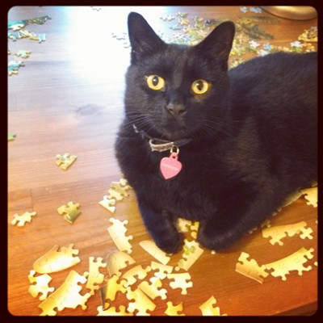

I'm helping!
I'm helping!
Here's some things I love:
I love meeting new people – friends are the best! I believe that the best way to make friends is to come up and rub your face on someone's ankle and meow (for cats) or scratch someone behind the ears or under the chin (for humans).
I also love snacks! ...But please don't feed them to me. Despite my roaming ways, I have a lovely human that I go home to every night for food. She appreciates that you only give me love and head rubs, so she can make sure I come home and get any medication I might need (and so she can keep track of me!)

I love doing puzzles! I can't decide if my favorite part is batting the little pieces to the floor, or using my teeth to pull apart pieces my human's already put together.